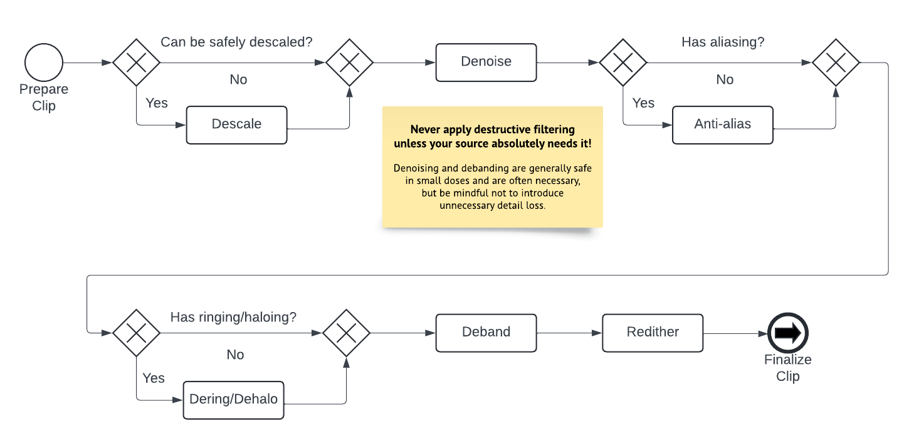

Order of filtering operations
Deciding which filters to use is important, but what's arguably even more important is understanding which order to run filters in.
Inverse filters
If you're running any filter that does the inverse of a process applied by the studio or authoring company, such as a descale or lowpass filter, you should almost always perform those before any other filtering. These types of filters rely on the "state" of the video being the same or as close as possible to the state when the filter was applied.
For example, applying anti-aliasing before descaling will modify the line art too much, making it difficult to reverse accurately. This may seem obvious, but issues arise when you intend to run multiple filters that do the inverse of different operations.
A common example would be an HD source that has been both upscaled and telecined. The trick to dealing with these is to imagine the original process. In this example, it's easy to imagine that telecining depends on the interlacing being 1px tall. Otherwise, it wouldn't be reversible by a player. This implies that, from a production standpoint, telecining must be performed last. Therefore, if you want to undo an upscale on a telecined source, you must IVTC (inverse telecine) first, unless you have reason to believe this was not the original order of operations.
Another example would be a source that is lowpassed and telecined. In this case, you must do a bit more detective work, as it could reasonably be done in either order. If there's significant vertical ringing that causes issues during inverse telecining, you may have to address the frequency merging first. However, if your source only has horizontal ringing, as is the case with many R2J DVDs, the order of operations matters less. This is because neither filter will interfere with how you would fix the artifact the other is trying to resolve.
Generic filtering
For most modern titles, there's a generally accepted order for applying filters in a filterchain:

Descaling
Attention
NEVER descale a video unless you're absolutely certain your descale is correct.
Descaling and similar inverse operations should be performed first if the source can be safely descaled, for reasons outlined previously.
Denoising
Since every consumer source contains some degree of compression noise, denoising is recommended. You may perform this step prior to descaling if the studio or authoring company added strong dithering in post that interferes with descaling. Early denoising can also speed up certain filterchains.
Anti-aliasing
Attention
A proper rescale will often deal with aliasing, ringing, and haloing artifacting. NEVER perform any of those three steps unless you're absolutely certain you must.
Noise around edges may affect anti-aliasing, so perform this step after denoising. Anti-aliasing should ideally be scene-filtered because it's a highly destructive filter and can significantly slow down the filtering process. Only perform this step if your source actually has aliasing.
Deringing/Dehaloing
Many top anti-aliasing filters might introduce mild ringing or haloing under certain conditions. It's safer to dering or dehalo after anti-aliasing. These are destructive processes, so only use them when absolutely necessary.
Debanding
Similar to denoising, nearly every source exhibits some degree of banding due to compression. Avoid excessive debanding to prevent unnecessary detail loss. A mild protective deband can be beneficial if minimal banding is present.
Redithering
Redithering aids in preserving gradients during encoding, especially since even 10-bit video doesn't have enough color depth to maintain all gradients flawlessly. Debanding and denoising may disrupt existing dither patterns, causing them to appear "broken" or "splotchy". Reapplying dither using a grain function that mimics the source's pattern can help smoothen out these issues. It's always recommended to apply dynamic dithering, even if the original source used static dithering.